# Connecter RStudio à GitLabIntroduction
Git, GitLab et suivi de version
Pré-requis
Installer git
Sur le site de git, téléchargez la dernière version pour votre système d’exploitation.
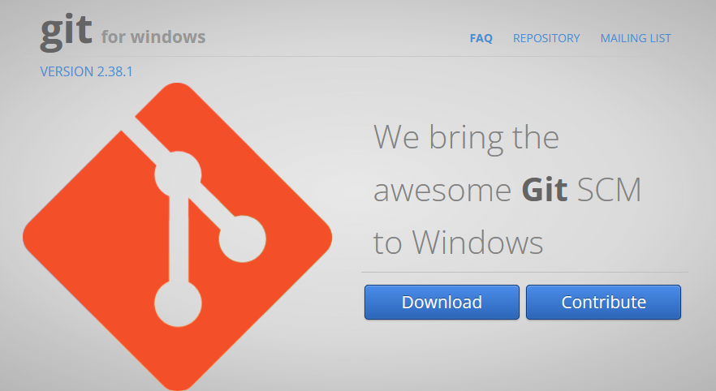
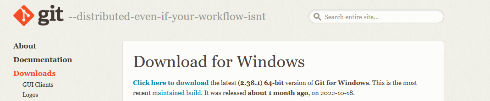
Double-cliquez sur l’exécutable Git-xxxx.exe :
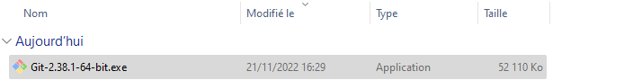
Laissez les paramètres par défaut proposés par l’assistant d’installation. Dans le menu Choosing the default editor used by Git, vous pouvez laisser l’éditeur de texte proposé par défaut (Vim) ou choisir l’éditeur de texte que vous avez l’habitude d’utiliser.
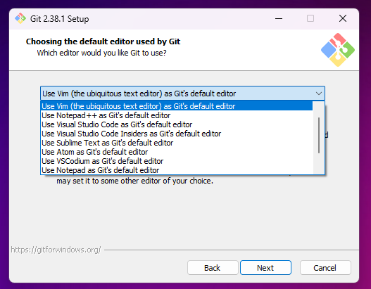
Dans les menus suivants, laissez les paramètres suivants jusqu’à ce que l’installation de git soit complétée.
Paramétrer RStudio
Ouvrez une session dans RStudio, puis cliquez sur Tools > Global Options > Git/SVN.

Assurez-vous que la case Enable version control interface for RStudio projects est cochée.
Assurez-vous que le chemin vers l’exécutable
gitest bien renseigné. Le cas échéant, cliquez sur Browse et indiquez le chemin vers son emplacement.Si aucune clé SSH n’est indiquée, cliquez sur Create RSA Key….
Validez en cliquant sur Apply.
Cliquez sur View public key et copiez la clé qui s’affiche.
Paramétrer GitLab
Ouvrez ce lien dans votre navigateur internet et cliquez sur Connexion SSO.
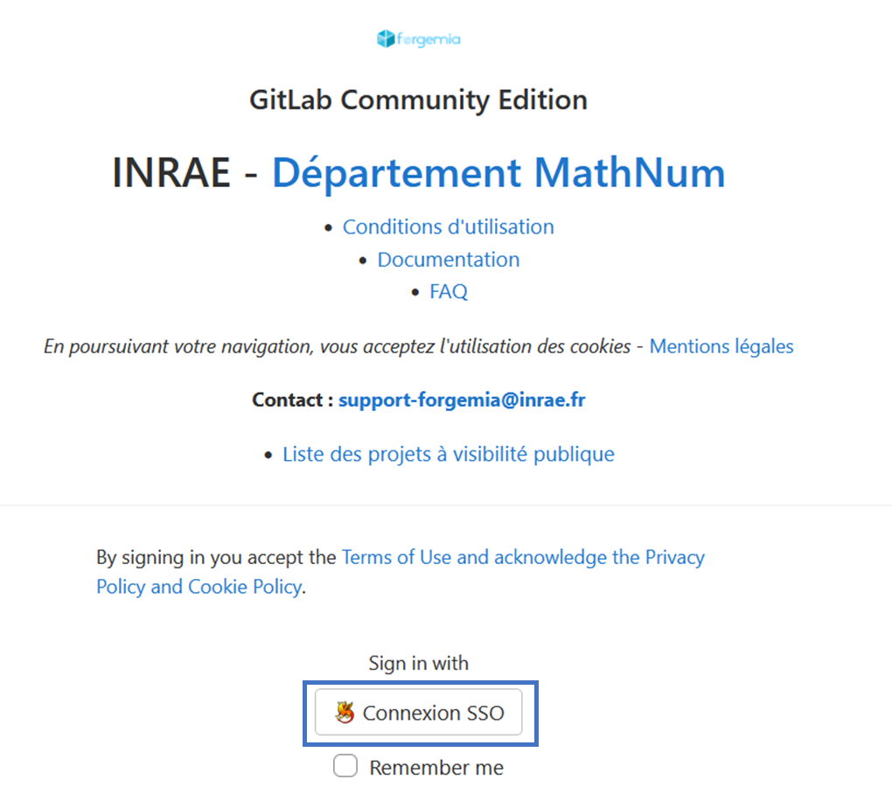
Dans le menu déroulant, choisissez INRAE et cliquez sur Sélectionner. Dans le menu suivant, renseignez les champs à l’aide de votre identifiant LDAP puis cliquez sur Se connecter.
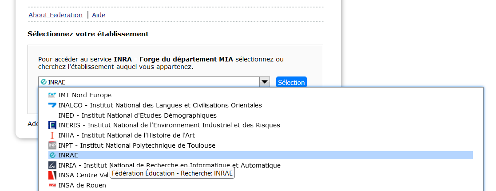
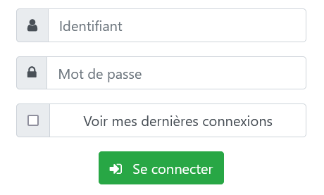
Cliquez sur l’icône dans le coin supérieur droit puis sur Preferences.
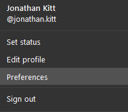
Dans la barre de menu à gauche, cliquez sur la première icône en forme de clé. Collez dans le champ Key la clé SSH copiée dans RStudio. Le champ Title devrait se remplir automatiquement. Si ce n’est pas le cas, renseignez ce champ. Vous pouvez choisir une date d’expiration de votre clé dans Expiration date. Pour terminer, cliquez sur Add key. Assurez-vous que votre clé apparaisse bien en base de la page sous Your SSH keys.
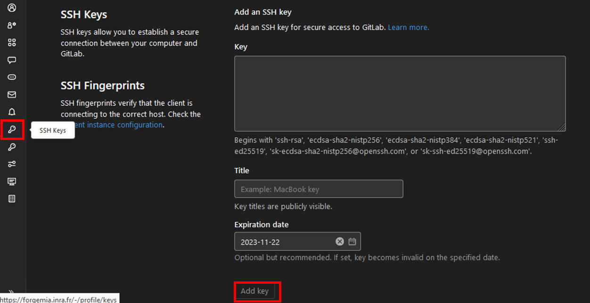
De GitLab vers RStudio
Dans GitLab
Dans la barre de menu supérieure, cliquez sur l’icône plus et sélectionnez New project/repository. Dans le menu suivant, choisissez Create blank project.
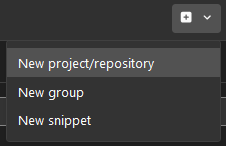

Dans le menu Create blank project, remplissez les différents champs :
Project name : nom du projet (avec les mêmes conventions d’écriture que si vous étiez en train de créer un projet dans RStudio).
Project URL : en fonction des groupes dont vous faites partie, vous pourrez choisir l’emplacement du projet. Pour l’instant, choisissez votre espace utilisateur.
Project slug : identique au nom du projet.
Visibility Level : qui a accès au projet. Pour notre exemple, choisissez Public.
Project Configuration : cochez la case Initialize repository with a README.
Cliquez sur Create project. Le projet s’ouvre et vous pouvez voir qu’il contient un ficher README.md. Ce fichier s’affiche sur la page d’accueil de votre projet et contient par défaut des informations sur l’utilisation de GitLab.

Nous allons maintenant “rapatrier” ce projet sur notre ordinateur. Pour cela, cliquez sur l’onglet Clone et choisissez Clone with SSH. Cliquez sur Copy URL.

Dans RStudio
Dans la barre de menu supérieure, cliquez sur File > New project.
Dans la fenêtre Create Project, choisissez Version Control.
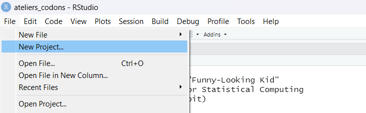

Dans la fenêtre Create Project from Version Control, choisissez Git.
Dans la fenêtre Clone Git Repository, remplissez les champs : - Repository URL : collez le lien SSH copié dans GitLab
- Project directory name : se remplit automatiquement
- Create project as subdirectory of : emplacement où sera créé le projet
Cochez la case Open in New Session dans le coin inféreur gauche de la fenêtre et cliquez sur Create Project.
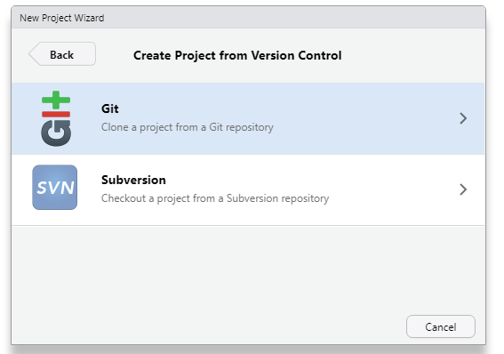
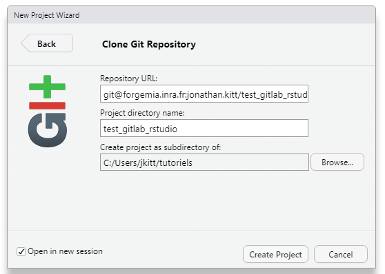
Une nouvelle fenêtre RStudio s’ouvre. Vous remarquerez la présence d’un onglet Git dans votre espace de travail.
Workflow
Dans votre espace de travail, sous l’onglet git, deux fichiers sont présents :
.gitignore
test_gitlab_rstudio.Rproj
Ces fichiers ont été ajoutés dans votre répertoire de travail lors de la création du projet dans RStudio, mais ils ne sont pas présents dans votre répertoire sur GitLab. L’icône ? indique qu’il s’agit de nouveaux fichiers.
Le statut des fichiers
L’icône à gauche du nom d’un fichier dans l’onglet git de votre espace de travail indique le statut de ce fichier :
 |
nouveau fichier |
| 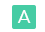 | fichier ajouté |
| 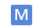 | fichier modifié |
Le workflow git permet de synchroniser le répertoire distant (sur GitLab) avec le répertoire local (notre projet RStudio). Il comprend trois étapes :
Commit
Nous allons sauvegarder les modifications apportées à nos fichiers (que ce soit des modifications dans un fichier, l’ajout ou la suppression de fichiers). Nous cochons pour cela les cases à gauche des icônes de statut, qui deviennent un A vert. Les deux fichiers sont maintenant prêts à être mis en ligne dans notre répertoire sur GitLab. C’est la première étape du workflow git, qu’on appelle un commit.
Cliquez sur Commit et ajoutez un commentaire dans la fenêtre qui s’ouvre.
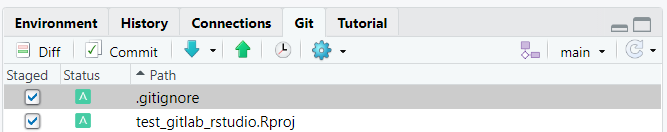

Cliquez ensuite sur Commit : un résumé de votre soumission s’affiche. Fermez cette fenêtre en cliquant sur Close.

Dans la fenêtre RStudio: Review Changes, vous pouvez lire Your branch is ahead of ‘origin/main’ by 1 commit’. Cela indique que votre branche locale est en avance d’une étape sur la branche distance sur GitLab.
Pull
Cela peut paraître contre-intuitif, mais il est important de nous assurer que notre répertoire local contient bien les dernières modifications sauvegardées dans notre répertoire distant. Pour cela, nous cliquons sur Pull.
Push
Il nous reste à pousser nos modifications locales vers le répertoire distant en cliquant sur Push.
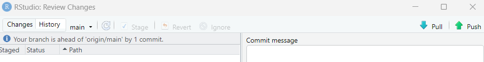 Assurons-nous que nos modifications ont bien été exportées en rafraîchissant notre page GitLab.
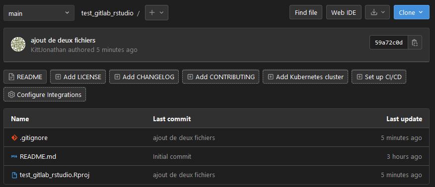
Nous allons modifier le fichier README.md : ouvrons-le en cliquant dessus dans le panneau de navigation. Le fichier s’ouvre dans le panneau scripts. Remplaçons le texte par la ligne suivante :
Sauvegardons le fichier (Ctrl + S ou icône disquette) : le fichier apparaît dans l’onglet git de notre espace de travail avec une icône M bleue, indiquant qu’il a été modifié.
Nous allons effectuer les mêmes opérations que ci-dessus pour exporter nos modifications vers la branche distante du répertoire sur GitLab : Commit > Pull > Push.
Historique des modifications
Travailler avec un suivi de version permet de retracer toutes les modifications apportées aux fichiers d’un répertoire.
Dans RStudio
Cliquez sur l’icône horloge dans l’onglet Git

L’hitorique contient toutes les mofications apportées, ainsi qu’une clé SHA, encore appelée commit hash. Il s’agit d’un identifiant unique attribué par Git à chacun des commits.
Dans GitLab
Sur la page d’accueil de votre répertoire disant sur GitLab, cliquez sur 3 Commits pour accéder à l’historique des modifications.

Vous retrouverez les clés SHA à droite des commits listés dans l’historique, ainsi que deux icônes vous permettant de :
copier la clé SHA du commit
ouvrir l’arborescence correspond au commit
De RStudio vers GitLab
Nous avons jusqu’ici vu comment utiliser le suivi de version en partant d’un nouveau répertoire sur GitLab.
Dans RStudio
Si nous souhaitons utiliser le suivi de version pour un répertoire présent sur notre ordinateur, deux cas de figure se présentent :
Répertoire associé à un projet RStudio
Si votre répertoire est déjà associé à un projet RStudio, ouvrez ce projet. Dans notre exemple, nous utilisons le projet ateliers_codons créés dans ce tutoriel.
Cliquez sur Tools > Project Options > Git/SVN.
Dans la fenêtre Project Options, choisissez Git dans le menu déroulant Version control system.
Dans la fenêtre qui s’ouvre, cliquez sur Yes en réponse à la question Do you want to initialize a new git repository for this project?.
Dans la fenêtre Restart RStudio, cliquez sur Yes.
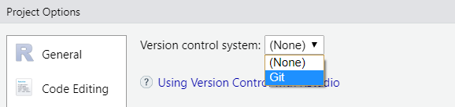
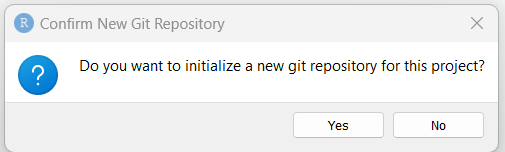
RStudio redémarre et vous remarquerez l’onglet Git dans l’espace de travail de votre projet.
Dans GitLab
Créez un nouveau projet dans GitLab, portant le même nom que le projet RStudio pour lequel vous souhaitez utiliser le suivi de version.
Faites attention à décocher la case Initialize repository with a README.
Dans RStudio
Nous allons utiliser les lignes de commandes affichées sur la page d’accueil de notre projet GitLab : 
Ouvrez un terminal dans l’onglet Git en cliquant sur la roue crantée puis sur Shell.
Dans l’onglet git, sélectionnez l’ensemble des fichiers à ajouter.
Ajouter plusieurs fichiers
Pour éviter d’avoir à cocher de nombres cases, vous pouvez cliquer sur le nom du premier fichier de la liste, puis utiliser la combinaison Ctrl + A. Cochez ensuite la case en face du premier fichier.
Cliquez sur Commit, ajoutez un commentaire dans la fenêtre qui s’ouvre et cliquez sur Commit. Pour l’instant, vous n’avez pas accès aux boutons Pull et Push.
Cliquez sur l’icône à droite du panneau Git :

Dans le fenêtre qui s’ouvre, cliquez sur Add Remote, puis renseignez les deux champs dans la fenêtre :
Remote Name -> “origin”
Remote URL -> collez le lien SSH copié dans GitLab
Cliquez ensuite sur Add.
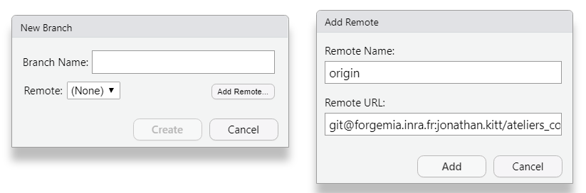
Dans la fenêtre New Branch, indiquez “master” dans le champ Branch Name, et assurez-vous que la case Sync branch with remote est bien cochée. Cliquez sur Create. Dans la fenêtre Local Branch Already Exists, cliquez sur Overwrite.